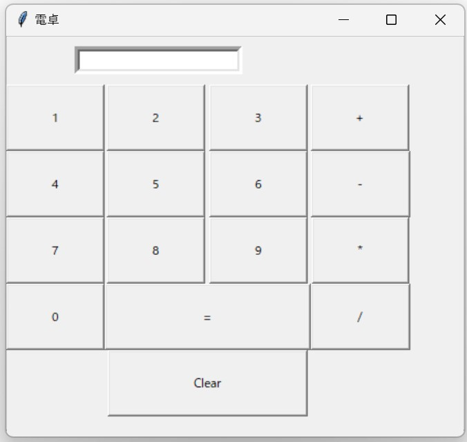

Tkinterを用いたシステムの作成
指定された要件と仕様に従ったシステムをTkinterを使ってpythonで開発した。要件と仕様は以下の通りである。
- 言語は python で、Tkinter を import している
- 「window」「ボタン」「テキストを表示する枠」が設置されている。
- 動作として、「window が起動」され、そこには、「何らかの機能を持ったボタン」が設置されている。ボタンが押され ると、それに対応して、何らかの機能が発動する。
このプログラムでは、数値ボタン(0-9)と四則演算ボタン(+, -, *, /)、イコール(=)ボタン、クリア(Clear)ボタンを表示している。数値ボタンと四則演算ボタンをクリックすると、入力フィールドに対応する数値や演算子が表示され、イコール(=)ボタンをクリックすると、入力された数式を評価し結果を表示する。クリア(Clear)ボタンをクリックすると、入力フィールドがクリアされる。 